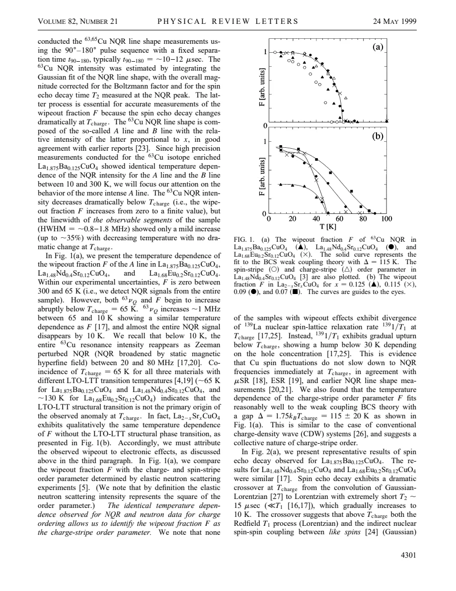
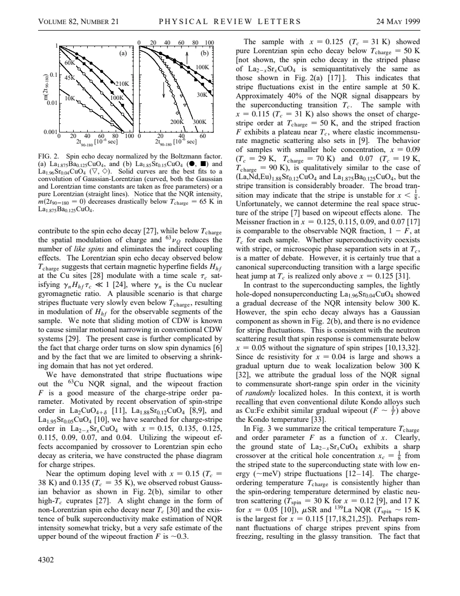

experiment · Hunt · supplied source 1999
63Cu NQR Measurement of Stripe Order Parameter in La2-xSrxCuO4
The 1999 paper linked lost Cu NQR intensity with stripe development; later work shows that wipeout is a detection-weighted quantity whose onset is not universally charge-order onset.
The question: Can missing Cu NQR echo intensity reveal stripe order that ordinary relaxation misses?
Before you start: the few terms you need
- LSCO: layered La2-xSrxCuO4; nominal x is Sr per formula unit
- Local probe: a distribution can matter even when the bulk average barely changes
See → explain → test
Understand it in four pictures.
Picture 1 / 4
Track the missing echo
Look for: Some nuclei decay too rapidly or move outside the detected frequency window.
Swipe across the picture to read every label, or enlarge it below.
Teaching schematic. Corrected spectral weight requires Boltzmann and echo-decay corrections.
Wipeout counts inaccessible signal, rather than removing nuclei from the sample.
Picture 2 / 4
Use a known stripe comparison
Look for: Nd-, Eu- and Ba-based samples provide a comparison with diffraction evidence.
Swipe across the picture to read every label, or enlarge it below.
- NQR intensity decreases
- Diffraction stripe comparison
- Historical order-parameter claim
Teaching schematic. Empirical correspondence in selected samples is not a universal identity.
Similar temperature dependence motivated the source identification of F with charge order.
Check the original: PDF p. 2
Picture 3 / 4
Keep the probe window
Look for: Glassy spin slowing is seen at different apparent temperatures by different probes.
Swipe across the picture to read every label, or enlarge it below.
Teaching schematic. The historical comparison cites neutron, muon and NQR frequency windows; this is not a calibrated temperature plot.
Charge onset and probe-dependent apparent spin freezing are separate scales.
Picture 4 / 4
Reassess the LSCO inference
Look for: Later short-delay NMR recovers weight that older experiments missed.
Swipe across the picture to read every label, or enlarge it below.
- 1999 interpretation
- 2017 reassessment
Teaching schematic. A historical comparison; the later source is ID29.
Use the 2017 correction before interpreting the low-doping wipeout onset as charge order.
Predict before revealing
A Cu echo disappears when T2 becomes shorter than the usable pulse delay. Which conclusion follows directly?
Choose an answer, then compare the reasoning.
Visibility is limited by the pulse sequence and relaxation. Converting loss to charge order needs independent evidence and a justified model.
Read the answer
That Cu population is inaccessible to this echo measurement Visibility is limited by the pulse sequence and relaxation. Converting loss to charge order needs independent evidence and a justified model.
Go deeper Follow the full argument
Why this experiment was proposed
Hunt and colleagues sought a nuclear-resonance signature of stripe order despite the absence of an ordinary critical divergence in the measured Cu relaxation rate. Stripe dynamics are glassy: spin fluctuations slow gradually and different instruments become sensitive at different rates. The paper compares Ba-, Nd- and Eu-containing La214 samples with known stripe behavior, then applies the same procedure to LSCO. It proposes that slowly fluctuating charge-rich and charge-poor regions broaden the instantaneous electric-field-gradient distribution and enhance spin relaxation enough to hide their Cu NQR signals. Its illustrative charge distribution of zero and one-half hole per Cu, and the resulting approximately 8 MHz frequency range, are assumptions of an idealized stripe picture, not a measured local charge amplitude.
How the intensity was measured
Spectra were acquired with a 90-degree and 180-degree echo sequence, commonly separated by about 10 to 12 microseconds. The A-line spectral intensity was integrated after fitting the line shape, with corrections for the thermal Boltzmann population and the measured echo decay T2. These corrections are essential: cooling increases the equilibrium nuclear polarization while a shorter T2 decreases the recovered echo. A and B lines were compared in an isotope-enriched Ba sample and showed similar temperature-dependent intensity loss. The observed line itself broadens only moderately because it samples surviving nuclei; the hidden part need not have the same frequency or decay distribution. Thus a quiet visible spectrum does not establish a quiet whole sample.
The original stripe comparison
In the supplied 1999 data, the wipeout fraction F grows below about 65 K in the compared stripe materials and closely follows a charge-order quantity inferred from elastic neutron diffraction. Diffraction intensity scales as the square of an order amplitude, so the authors compare the corresponding amplitude rather than blindly equating intensity with amplitude. They fit the temperature dependence with a weak-coupling BCS-like order-parameter form, obtaining a characteristic ratio Δ = 1.75 kBTcharge. This fit is an analogy for the stripe evolution, not a measured superconducting gap. Different structural-transition temperatures and similar wipeout behavior motivated an electronic explanation rather than assigning the anomaly solely to the LTO-to-LTT transition.
What happens to spin dynamics
The paper reports a change from an echo containing Gaussian and Lorentzian decay to a very short, nearly exponential echo in the stripe regime. It relates this to changes in indirect nuclear coupling and low-frequency spin fluctuations. La relaxation rises gradually and exhibits a lower-temperature hump rather than a divergence exactly at charge onset. Elastic neutrons, muons and NQR assign different apparent spin-order temperatures because their frequency windows differ. This is compatible with glassy slowing, but does not uniquely identify a microscopic real-space arrangement. Below still lower temperatures the resonance can reappear as broad, magnetically perturbed NQR: disappearance from one narrow measurement window does not imply an absence of magnetic nuclei.
The LSCO claims require the later correction
The source interprets wipeout for x = 0.07 to 0.125 as stripe instability and assigns about 50 K onset near x = 0.115 or 0.125. It also observes strong loss at x = 0.04, where it discusses localized holes and commensurate correlations, already showing that signal loss is not stripe-specific. The later supplied ID29 directly revisits the old method: charge-influenced fast echoes start near 80 K in its x = 0.115 crystal, and early Gaussian extrapolation missed them. At lower dopings, localization can produce wipeout without identifying charge order. The useful durable result here is the sensitivity of Cu echo detectability to heterogeneous slowing. F should be described as a detection-weighted fraction with sample and pulse conditions attached, not as a general measure of charge modulation amplitude. Microscopic coexistence of superconductivity and the inferred stripes remains unresolved in this historical paper.
How to compare the evidence
Read this original interpretation alongside source 29, which improves the ability to detect very rapidly decaying echoes. The original paper treats corrected missing NQR intensity and the change in echo shape as evidence for stripe fluctuations in selected compounds. It also discusses lightly doped x = 0.04, where intensity is lost without its stripe criterion. That counterexample already prevents wipeout from becoming a universal synonym for charge order. The later short-delay NMR experiment revises the onset assigned to a specific x = 0.115 specimen by recovering previously inaccessible broad wings. Both results concern detectability and spin dynamics. Neither missing weight alone nor an assumed charge-to-frequency conversion is a direct image of the real-space charge pattern or an absolute modulation amplitude.
Translate the mathematics Key equations and symbol meanings
F(T) = 1 - I_corrected(T)/I_reference
Symbols: F: wipeout fraction; I_corrected: thermally and echo-decay corrected visible NQR intensity; I_reference: high-temperature reference.
An operational missing-signal fraction; equality to a charge-order amplitude is an additional source interpretation.
I_diffraction ∝ |Ψ_charge|²
Symbols: I_diffraction: elastic charge-order diffraction intensity; Ψ_charge: charge-order amplitude.
The original comparison uses an order amplitude inferred from diffraction, rather than identifying raw diffraction intensity with NQR weight.
Read the evidence A guided look at the original figures

Open the full original page ↗

Open the full original page ↗
What this paper does—and does not—establish
- Historical 1999 interpretation is identified explicitly.
- Wipeout is not universally a charge-stripe amplitude or a unique charge-order onset.
- Exact sample transition temperatures should not be transferred between Ba-, Nd-, Eu- and Sr-only samples.
Explain it back.
Try answering aloud before opening the explanation.
Does the fitted Δ represent a superconducting gap?
No. It parameterizes a BCS-like temperature dependence used for the stripe interpretation.
Why might the visible linewidth change little during wipeout?
The rapidly relaxing or very broad population is removed from the visible spectrum.
Why include ID29 when studying this paper?
It explicitly corrects the earlier onset assignment and demonstrates recovery of fast, broad signal with shorter delays.
Connect the next paper.
Source version, reading coverage and preservation
Complete supplied substantive text read; selected main figure and equation pages rendered and visually checked
Reviewed body pages: 1, 2, 3, 4. References checked as a bibliography but cited works were not independently re-read.
Original file retained byte for byte. SHA-256: d5de7d00be21c14b8406319bf5ec2dac829bc0117d6e73ee90d62e1b60ed8a03
Filename: PRL - Hunt - Cu NQR stripe order parameter in LSCO - 1999.pdf.